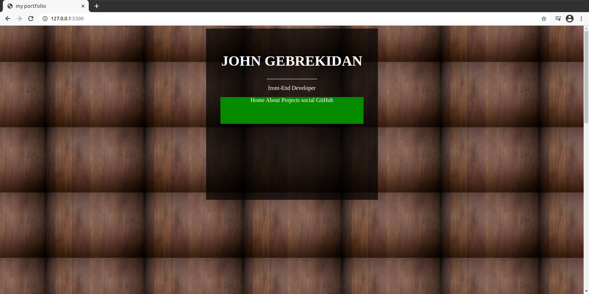

My first project, my first website and my first portfolo was at once, I enjoyed the whole process overall, pretty much perfect. Obviously except the stuck points where you literally freeze for hours over one element, technically I can see myself getting better overtime I spend more with the project, resizing it to mobile size was the funnest part of these project.